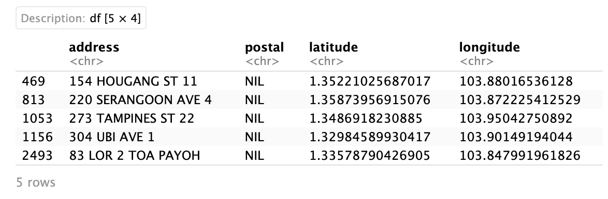

pacman::p_load(olsrr, corrplot, sf, spdep, tmap, tidyverse, sfdep, onemapsgapi, httr, rjson, plotly, ggplot2, units, matrixStats, heatmaply, ggpubr, Metrics, GWmodel, SpatialML)Take Home Exercise 3
1.0 Overview
1.1 Background
Housing is an essential component of household wealth worldwide. Buying a housing has always been a major investment for most people. The price of housing is affected by many factors. Some of them are global in nature such as the general economy of a country or inflation rate. Others can be more specific to the properties themselves. These factors can be further divided to structural and locational factors. Structural factors are variables related to the property themselves such as the size, fitting, and tenure of the property. Locational factors are variables related to the neighbourhood of the properties such as proximity to childcare centre, public transport service and shopping centre.
Conventional, housing resale prices predictive models were built by using Ordinary Least Square (OLS) method. However, this method failed to take into consideration that spatial autocorrelation and spatial heterogeneity exist in geographic data sets such as housing transactions. With the existence of spatial autocorrelation, the OLS estimation of predictive housing resale pricing models could lead to biased, inconsistent, or inefficient results (Anselin 1998). In view of this limitation, Geographical Weighted Models were introduced for calibrating predictive model for housing resale prices.
1.2 Task
In this take-home exercise, you are tasked to predict HDB resale prices at the sub-market level (i.e. HDB 3-room, HDB 4-room and HDB 5-room) for the month of January and February 2023 in Singapore. The predictive models must be built by using by using conventional OLS method and GWR methods. You are also required to compare the performance of the conventional OLS method versus the geographical weighted methods.
2.0 Setup
2.1 Import Packages
sf, spdep, sfdep - Used for handling geospatial data
tmap, plotly, ggplot2, corrplot - Used for visualizing dataframes and plots
units, maxtrixStats - Used for computing proximity matrix
ggpubr, olsrr, GWmodel, SpatialML - Used for model creation
Metrics - Used for calculating rmse
tidyVerse - Used for data transformation and presentation
onemapsgapi, httr, rjson - Used for data collection and wrangling
3.0 Data Wrangling
3.1 Datasets Used
| Type | Name |
|---|---|
| Aspatial | HDB Resale Data |
| Geospatial | Singapore Subzones (base layer) |
| Geospatial (factor) | Bus Stops |
| Geospatial (factor) | MRT Station Exits |
| Geospatial (factor) | Kindergartens |
| Geospatial (factor) | Childcare |
| Geospatial (factor) | Primary Schools |
| Geospatial (factor) | Sports Facilities |
| Geospatial (factor) | Parks |
| Geospatial (factor) | Gyms |
| Geospatial (factor) | Water Sites |
| Geospatial (factor) | Hawker Centers |
| Geospatial (factor) | Supermarkets |
| Geospatial (factor) | Eldercare |
| Geospatial (factor) | Waste Disposal |
| Geospatial (factor) | Active Cemeteries |
| Geospatial (factor) | Historic Sites |
3.2 Aspatial Data
3.2.1 Load Data
resale <- read_csv("data/aspatial/resale-flat-prices-based-on-registration-date-from-jan-2017-onwards.csv")glimpse(resale)
The dataset is based on the period of Jan 2017 to March 2023. It contains 11 columns with 149,071 rows.
3.2.2 Filter Data
The flat type has a high significance (p-value) of 2e-16 at 95% confidence level. This would impact the significance of all the other variables so the data is to be further split.
summary(aov(resale_price ~ flat_type, data = resale))
This exercise will use four bedroom flats only and for a shorter time period - Jan 01 2021 to Dec 31 2022 for train data and Jan 01 2023 to Feb 28 2023 for test data.
resale <- resale %>%
filter(flat_type == "3 ROOM") %>%
filter(month >= "2021-01" & month <= "2022-12" | month >= "2023-01" & month <= "2023-02") %>%
select(-c(town, flat_type, flat_model, lease_commence_date)) #drop irrelevant variablesCode
c = 13778 #nrow(resale)
cat("The dataset now contains", c, "rows.")The dataset now contains 13778 rows.3.2.3 Clean Up Variables
3.2.3.1 Street Address
Extract full address with joint block and street name. This will later be used to get the corresponding latitude and longitude of the addresses.
resale <- resale %>%
mutate(resale, address = paste(block,street_name)) %>%
select(-c(block, street_name)) #drop irrelevant variables3.2.3.2 Remaining Lease
Extract numeric value of remaining lease from text
Code
str_list <- str_split(resale$remaining_lease, " ")
c = 1 #index counter
for(i in str_list) {
year <- as.numeric(i[1])
month = 0
if(length(i) > 2) { #x years y months
month <- as.numeric(i[3])
}
resale$remaining_lease[c] <- (year + round(month/12, 2))
c = c + 1
}
resale<- resale |>
mutate(remaining_lease=as.numeric(remaining_lease))3.2.3.3 Floor Level
The storey_range is a categorical variable with 15 categories - “01 TO 03”, “04 TO 06” upto “46 TO 48”. Keeping them as separate categories would induce high carnality into the model.
The distribution of the storey_range is as follows -
Code
ggplot(resale, aes(x= storey_range)) +
geom_bar() +
scale_x_discrete(guide = guide_axis(n.dodge=2))
For ease of use and to lower the carnality, the data will be categorised into 3 divisions - 1,2,3 which would correspond to storeys 01-06, 07-12 and 13-48
Code
#get ordinal data of storey_range
storey_text <- unique(resale$storey_range)
storey_cat <- c(1,1,2,2, rep(3, 11))
#set label
resale$storey_num <- storey_cat[match(resale$storey_range, storey_text)]
levels(resale$storey_num) <- storey_text
#change column to categorical data type
resale<- resale |>
mutate(storey_num=as.factor(storey_num)) |>
select(-c(storey_range)) #drop irrelevant variables3.2.4 Data Normalisation
View Distribution
Code
factors <- c("floor_area_sqm","remaining_lease", "resale_price")
factors_hist <- vector(mode = "list", length = 3)
for (i in factors) {
hist_plot <- ggplot(resale, aes_string(x = i)) +
geom_histogram(fill = "lightblue3") +
labs(title = i) +
theme(axis.title = element_blank())
factors_hist[[i]] <- hist_plot
}
ggarrange(plotlist = factors_hist, ncol = 3, nrow = 1)Based on the distribution, floor_area_sqm seems to follow a normal distribution, remaining_lease seems to have two peaks around 55- 65 years and 93 years so a normal distribution is assumed. Finally, resale_price seems to be highly right skewed which required further transformation.
Transform data
#log transformation for right skewed data
resale$resale_price <- log10(resale$resale_price)View Distribution
Code
ggplot(resale, aes_string(x = "resale_price")) +
geom_histogram(fill = "lightblue4") +
labs(title = "resale_price") +
theme(axis.title = element_blank())3.2.5 Get Latitude and Longitude
Extract latitude, longitude and postal code of all addresses and store into temporary data frame for further inspection
Code
#list of addresses
add_list <- sort(unique(resale$address))
#dataframe to store api data
postal_coords <- data.frame()
for (i in add_list) {
r <- GET('https://developers.onemap.sg/commonapi/search?',
query=list(searchVal=i,
returnGeom='Y',
getAddrDetails='Y'))
data <- fromJSON(rawToChar(r$content))
found <- data$found
res <- data$results
if (found > 0){
postal <- res[[1]]$POSTAL
lat <- res[[1]]$LATITUDE
lng <- res[[1]]$LONGITUDE
new_row <- data.frame(address= i, postal = postal, latitude = lat, longitude = lng)
}
else {
new_row <- data.frame(address= i, postal = NA, latitude = NA, longitude = NA)
}
postal_coords <- rbind(postal_coords, new_row)
}3.2.5.1 Check for missing values
postal_coords[(is.na(postal_coords$postal) | is.na(postal_coords$latitude) | is.na(postal_coords$longitude) | postal_coords$postal=="NIL"), ]
After looking up the addresses on Google Maps, these were postal codes found.
| address | postal |
|---|---|
| 154 HOUGANG ST 11 | 530154 |
| 220 SERANGOON AVE 4 | 550220 |
| 273 TAMPINES ST 22 | 520273 |
| 304 UBI AVE 1 | 400304 |
| 83 LOR 2 TOA PAYOH | 310083 |
Code
indices = c(469, 813, 1053, 1156, 2493)
postal_codes = c("530154", "550220", "520273", "400304", "310083")
for (i in 1:length(indices)) {
postal_coords$postal[indices[i]] <- postal_codes[i]
}3.2.5.2 Join into main apsatial data frame
resale <- left_join(resale, postal_coords, by = c('address' = 'address')) %>%
select(-c(address, postal)) #drop irrelevant variables3.2.5.3 Convert to sf object
resale <- st_as_sf(resale,
coords = c("longitude", "latitude"),
crs = 4326) %>%
st_transform(crs = 3414)3.2.5.4 Visualise resale price
plot(resale["resale_price"], key.pos = 4)
Although this is simply an initial visualisation of the dataset, it shows a brief idea of the spread of the sales across Singapore. There is a slight clustering near the central region indicating the prices are higher than the rest of the region. This is a useful indicator for variable selection.
3.2.6 Save Checkpoint as RDS file
Save file
write_rds(resale, "data/aspatial/rds/resale.rds")Read File
resale <- read_rds("data/aspatial/rds/resale.rds")3.3 Geospatial Data
The geospatial data used is the base map layer of Singapore and locational factors. For ease of use, the factors will be grouped by category (transport, education, sports, amenities and others).
Bus Stop
MRT
Kindergartens
Childcare
Primary Schools
Good Primary Schools
Sports Facilities
Parks
Gyms
Water Sites
Hawker Centers
Supermarkets
Eldercare
CBD Area
Waste Disposal
Active Cemeteries
Historic Sites
3.3.1 Load Data and Transform CRS
Store token for using onemap api
token <- "your token"mpsz <- st_read(dsn = "data/geospatial/base", layer="MP14_SUBZONE_WEB_PL") %>%
st_transform(crs = 3414)Bus Stop
busstop <- st_read(dsn = "data/geospatial/transport/BusStop", layer="BusStop") %>%
st_transform(crs = 3414) %>%
select(1)MRT
Code
#extract MRT data and save as shapefile
mrt <- st_read(dsn= "data/geospatial/transport/MRT/lta-mrt-station-exit-kml.kml") |>
st_zm()
st_write(obj = mrt,
dsn = "data/geospatial/transport/MRT",
layer = "MRT",
driver = "ESRI Shapefile",
append = FALSE)#read shapefile
mrt <- st_read(dsn= "data/geospatial/transport/MRT", layer = "MRT") %>%
st_transform(crs = 3414) %>%
select(1)Kindergartens
Code
#extract kindergarten data and save as shapefile
kindergartens<-get_theme(token,"kindergartens")
kindergartens <- st_as_sf(kindergartens, coords=c("Lng", "Lat"), crs=4326)
st_write(obj = kindergartens,
dsn = "data/geospatial/education/kindergartens",
layer = "kindergartens",
driver = "ESRI Shapefile")kindergartens <- st_read(dsn = "data/geospatial/education/kindergartens", layer = "kindergartens") %>%
st_transform(crs = 3414) %>%
select(1)Childcare centers
Code
#extract childcare center data and save as shapefile
childcare<-get_theme(token,"childcare")
childcare <- st_as_sf(childcare, coords=c("Lng", "Lat"), crs=4326)
st_write(obj = childcare,
dsn = "data/geospatial/education/childcare",
layer = "childcare",
driver = "ESRI Shapefile")childcare <- st_read(dsn = "data/geospatial/education/childcare", layer = "childcare") %>%
st_transform(crs = 3414) %>%
select(1)Primary school
Code
primary_schools <- read.csv("data/geospatial/education/primary_schools/general-information-of-schools.csv") |>
filter(mainlevel_code=="PRIMARY") |>
select(school_name, address, postal_code)
#dataframe to store api data
coords <- data.frame()
for (i in primary_schools$postal_code) {
r <- GET('https://developers.onemap.sg/commonapi/search?',
query=list(searchVal=i,
returnGeom='Y',
getAddrDetails='N'))
data <- fromJSON(rawToChar(r$content))
found <- data$found
res <- data$results
if (found > 0){
lat <- res[[1]]$LATITUDE
lng <- res[[1]]$LONGITUDE
new_row <- data.frame(postal = as.numeric(i), latitude = lat, longitude = lng)
}
else {
new_row <- data.frame(postal = as.numeric(i), latitude = NA, longitude = NA)
}
coords <- rbind(coords, new_row)
}
#There are 3 missing coordinate data for postal codes 88256, 99757 and 99840
#This is because the codes have 5 instead of 6 digits and need 0 padding
coords <- na.omit(coords)
for (i in c("088256", "099757", "099840")) {
r <- GET('https://developers.onemap.sg/commonapi/search?',
query=list(searchVal=i,
returnGeom='Y',
getAddrDetails='N'))
res <- fromJSON(rawToChar(r$content))$results
new_row <- data.frame(postal = as.numeric(i), latitude = res[[1]]$LATITUDE, longitude = res[[1]]$LONGITUDE)
coords <- rbind(coords, new_row)
}
#add coordinate data into dataframe
primary_schools <- left_join(primary_schools, coords, by = c('postal_code' = 'postal'))
#store as sf object
primary_schools <- st_as_sf(primary_schools, coords=c("longitude", "latitude"), crs=4326)
#save as shapefile
st_write(obj = primary_schools,
dsn = "data/geospatial/education/primary_schools",
layer = "primary_schools",
driver = "ESRI Shapefile")primary_schools <- st_read(dsn = "data/geospatial/education/primary_schools", layer = "primary_schools") %>%
st_transform(crs = 3414) %>%
select(1)Good primary school
The top 10 schools have been selected from here. Although this is 2020 data, it’s ranking structure was more holistic as it was not solely based on GEP.
Code
school_list <- toupper(c("Nanyang Primary School", "Tao Nan School", "Catholic High School", "Nan Hua Primary School", "St. Hilda's Primary School", "Henry Park Primary School", "Anglo-Chinese School (Primary)", "Raffles Girls' Primary School", "Pei Hwa Presbyterian Primary School", "Chij St. Nicholas Girls' School"))
good_primary_schools <- primary_schools %>%
filter(schl_nm %in% school_list)
#There is a discrepency between the way Catholic High School and Chij St. Nicholas Girls' School are mentioned in the school list on the website but not in the list imported from onemap api. To simplify this, the next two best schools will be selected.
school_list <- toupper(c("Rosyth School", "Kong Hwa School"))
good_primary_schools <- rbind(good_primary_schools, primary_schools %>% filter(schl_nm %in% school_list))
#save as shapefile
st_write(obj = good_primary_schools,
dsn = "data/geospatial/education/good_primary_schools",
layer = "good_primary_schools",
driver = "ESRI Shapefile")good_primary_schools <- st_read(dsn = "data/geospatial/education/good_primary_schools", layer = "good_primary_schools") %>%
st_transform(crs = 3414) %>%
select(1)Sports Facilities
Code
#extract sports facilities data and save as shapefile
sport_facilities <- get_theme(token,"sportsg_sport_facilities")
#Longitute column contains "longitute|latitude" which needs to be cleaned
sport_facilities <- sport_facilities %>%
mutate(Lng=str_extract(Lng, "\\d+\\.?\\d*")) %>%
select("NAME", "Lng", "Lat")
sport_facilities <- st_as_sf(sport_facilities, coords=c("Lng", "Lat"), crs=4326)
# creating a saved sf object in data file for easy reference
st_write(obj = sport_facilities,
dsn = "data/geospatial/sports/sport_facilities",
layer = "sport_facilities",
driver = "ESRI Shapefile")sport_facilities <- st_read(dsn = "data/geospatial/sports/sport_facilities", layer = "sport_facilities") %>%
st_transform(crs = 3414) %>%
select(1)Parks
Code
#extract park data and save as shapefile
parks <- st_read(dsn= "data/geospatial/sports/parks/parks.kml") |>
st_zm()
st_write(obj = parks,
dsn = "data/geospatial/sports/parks",
layer = "parks",
driver = "ESRI Shapefile",
append = FALSE)#read shapefile
parks <- st_read(dsn= "data/geospatial/sports/parks", layer = "parks") %>%
st_transform(crs = 3414) %>%
select(1)Gyms
Code
#extract gym data and save as shapefile
gyms <- st_read(dsn= "data/geospatial/sports/gyms/gyms-sg-kml.kml") |>
st_zm()
st_write(obj = gyms,
dsn = "data/geospatial/sports/gyms",
layer = "gyms",
driver = "ESRI Shapefile",
append = FALSE)#read shapefile
gyms <- st_read(dsn= "data/geospatial/sports/gyms", layer = "gyms") %>%
st_transform(crs = 3414) %>%
select(1)Water Sites
Code
#extract gym data and save as shapefile
watersites <- st_read(dsn= "data/geospatial/sports/watersites/abc-water-sites.kml") |>
st_zm()
st_write(obj = watersites,
dsn = "data/geospatial/sports/watersites",
layer = "watersites",
driver = "ESRI Shapefile",
append = FALSE)#read shapefile
watersites <- st_read(dsn= "data/geospatial/sports/watersites", layer = "watersites") %>%
st_transform(crs = 3414) %>%
select(1)Hawker centers
Code
#extract gym data and save as shapefile
hawker_centers <- st_read(dsn= "data/geospatial/amenities/hawker_centers/hawker-centres-kml.kml") |>
st_zm()
st_write(obj = hawker_centers,
dsn = "data/geospatial/amenities/hawker_centers",
layer = "hawker_centers",
driver = "ESRI Shapefile",
append = FALSE)#read shapefile
hawker_centers <- st_read(dsn= "data/geospatial/amenities/hawker_centers", layer = "hawker_centers") %>%
st_transform(crs = 3414) %>%
select(1)Supermarkets
Code
#extract gym data and save as shapefile
supermarkets <- st_read(dsn= "data/geospatial/amenities/supermarkets/supermarkets-kml.kml") |>
st_zm()
st_write(obj = supermarkets,
dsn = "data/geospatial/amenities/supermarkets",
layer = "supermarkets",
driver = "ESRI Shapefile",
append = FALSE)#read shapefile
supermarkets <- st_read(dsn= "data/geospatial/amenities/supermarkets", layer = "supermarkets") %>%
st_transform(crs = 3414) %>%
select(1)Eldercare
Code
#extract eldercare center data and save as shapefile
eldercare <-get_theme(token,"eldercare")
eldercare <- st_as_sf(eldercare, coords=c("Lng", "Lat"), crs=4326)
st_write(obj = eldercare,
dsn = "data/geospatial/amenities/eldercare",
layer = "eldercare",
driver = "ESRI Shapefile")eldercare <- st_read(dsn = "data/geospatial/amenities/eldercare", layer = "eldercare") %>%
st_transform(crs = 3414) %>%
select(1)CBD Area
As the ‘Downtown Core’ is also referred to as the Central Business District (CBD), the coordinates of ‘Downtown Core’ shall be used. Based on the information here, the latitude is 1.287953 and longitude is 103.851784
cbd <- st_as_sf(data.frame(name = c("CBD Area"), latitude = c(1.287953), longitude = c(103.851784)),
coords = c("longitude", "latitude"),
crs = 3414)Waste Disposal sites
Code
#extract waste disposal data and save as shapefile
waste_disposal <- st_read(dsn= "data/geospatial/others/waste_disposal/waste-treatment-kml.kml") |>
st_zm()
st_write(obj = supermarkets,
dsn = "data/geospatial/others/waste_disposal",
layer = "waste_disposal",
driver = "ESRI Shapefile",
append = FALSE)#read shapefile
waste_disposal <- st_read(dsn= "data/geospatial/others/waste_disposal", layer = "waste_disposal") %>%
st_transform(crs = 3414) %>%
select(1)Active Cemeteries
Code
#extract active cemeteries data and save as shapefile
cemeteries <- st_read(dsn= "data/geospatial/others/active_cemeteries/active-cemeteries-kml.kml") |>
st_zm()
st_write(obj = cemeteries,
dsn = "data/geospatial/others/active_cemeteries",
layer = "cemeteries",
driver = "ESRI Shapefile",
append = FALSE)#read shapefile
cemeteries <- st_read(dsn= "data/geospatial/others/active_cemeteries", layer = "cemeteries") %>%
st_transform(crs = 3414) %>%
select(1)Historic Sites
Code
#extract historic sites data and save as shapefile
historic_sites <- st_read(dsn= "data/geospatial/others/historic_sites/historic-sites-kml.kml") |>
st_zm()
st_write(obj = historic_sites,
dsn = "data/geospatial/others/historic_sites",
layer = "historic_sites",
driver = "ESRI Shapefile",
append = FALSE)#read shapefile
historic_sites <- st_read(dsn= "data/geospatial/others/historic_sites", layer = "historic_sites") %>%
st_transform(crs = 3414) %>%
select(1)3.3.2 Check for Invalid Geometries
3.3.2.1 Base layer
Code
c <- 9 #length(which(st_is_valid(mpsz) == FALSE))
cat("There are", c , "invalid geometries in the base layer. This shall be resolved in the following step.")There are 9 invalid geometries in the base layer. This shall be resolved in the following step.mpsz <- st_make_valid(mpsz)Code
c <- 0 #length(which(st_is_valid(mpsz) == FALSE))
cat("There are now", c , "invalid geometries in the base layer.")There are now 0 invalid geometries in the base layer.3.3.2.2 Geospatial Factors
Code
df_list <- c("busstop", "cbd", "cemeteries", "childcare", "eldercare", "good_primary_schools", "gyms", "hawker_centers", "historic_sites", "kindergartens", "mrt", "parks", "primary_schools", "sport_facilities", "supermarkets", "waste_disposal", "watersites")
c = 0
for(i in df_list) {
c = c + length(which(st_is_valid(eval(parse(text = i))) == FALSE))
}Code
c = 0
cat("There are", c , "invalid geometries in the geospatial factors")There are 0 invalid geometries in the geospatial factors3.3.3 Check for Missing Values
3.3.3.1 Base layer
Code
c = 0 #sum(is.na(mpsz))
cat("There are", c , "missing values in the base layer.")There are 0 missing values in the base layer.3.3.3.2 Geospatial Factors
Code
c = 0
for(i in df_list) {
c = c + sum(is.na(mpsz))
}Code
c = 0
cat("There are", c , "missing values in the geospatial factors.")There are 0 missing values in the geospatial factors.3.3.4 Verify CRS
3.3.4.1 Base layer
st_crs(mpsz)[1]$input3.3.4.2 Geospatial Factors
Code
for(i in df_list) {
cat(i, st_crs(eval(parse(text = i)))[1]$input, "\n")
}3.4 Visualise Data
Code
tm_shape(mpsz) +
tm_borders(alpha = 0.5) +
tmap_options(check.and.fix = TRUE) +
tm_shape(busstop) +
tm_dots(col="azure3", alpha=0.5) +
tm_shape(mrt) +
tm_dots(col="yellow", alpha=1)+
tm_layout(main.title = "Transport",
main.title.position = "center")Code
tm_shape(mpsz) +
tm_borders(alpha = 0.5) +
tmap_options(check.and.fix = TRUE) +
tm_shape(childcare) +
tm_dots(col="black", alpha=0.2) +
tm_shape(primary_schools) +
tm_dots(col="lightskyblue3", alpha=0.5)+
tm_shape(kindergartens) +
tm_dots(col="lightslateblue", alpha=0.5) +
tm_shape(good_primary_schools) +
tm_dots(col="red", alpha=1)+
tm_shape(mpsz) +
tm_borders(alpha = 0.01) +
tm_layout(main.title = "Education",
main.title.position = "center")Code
tm_shape(mpsz) +
tm_borders(alpha = 0.5) +
tmap_options(check.and.fix = TRUE) +
tm_shape(sport_facilities) +
tm_dots(col="violet", alpha=1) +
tm_shape(parks) +
tm_dots(col="mediumseagreen", alpha=0.5) +
tm_shape(gyms) +
tm_dots(col="azure3", alpha=0.7) +
tm_shape(watersites) +
tm_dots(col="skyblue3", alpha=1) +
tm_layout(main.title = "Sports",
main.title.position = "center")
Code
tm_shape(mpsz) +
tm_borders(alpha = 0.5) +
tmap_options(check.and.fix = TRUE) +
tm_shape(hawker_centers) +
tm_dots(col="firebrick3", alpha=1) +
tm_shape(supermarkets) +
tm_dots(col="olivedrab", alpha=0.5) +
tm_shape(eldercare) +
tm_dots(col="tan", alpha=0.7) +
tm_layout(main.title = "Amenities",
main.title.position = "center")Code
tm_shape(mpsz) +
tm_borders(alpha = 0.5) +
tmap_options(check.and.fix = TRUE) +
tm_shape(cbd) +
tm_dots(col="purple", alpha=1) +
tm_shape(waste_disposal) +
tm_dots(col="coral3", alpha=0.5) +
tm_shape(cemeteries) +
tm_dots(col="gray20", alpha=1) +
tm_shape(historic_sites) +
tm_dots(col="darkseagreen2", alpha=1) +
tm_layout(main.title = "Others",
main.title.position = "center")
4.0 Regression Modelling
4.1 Proximity Calculation
for(i in df_list) {
dist_matrix <- st_distance(resale, eval(parse(text = i))) |> drop_units()
resale[,paste("PROX_",toupper(i), sep = "")] <- rowMins(dist_matrix)
}4.2 Count in range Calculation
num_list <- c("kindergartens", "childcare", "busstop", "primary_schools")
radius_list <- c(350, 350, 350, 1000)
for(i in 1:4) {
dist_matrix <- st_distance(resale, eval(parse(text = num_list[i]))) |> drop_units()
resale[,paste("NUM_",toupper(num_list[i]),"_WITHIN_",radius_list[i],"M", sep = "")] <- rowSums(dist_matrix <= radius_list[i])
}4.3 Save checkpoint as RDS file
Save file
write_rds(resale, "data/rds/resale.rds")Read file
Code
df_list <- c("busstop", "cbd", "cemeteries", "childcare", "eldercare", "good_primary_schools", "gyms", "hawker_centers", "historic_sites", "kindergartens", "mrt", "parks", "primary_schools", "sport_facilities", "supermarkets", "waste_disposal", "watersites")
prox <- paste("PROX_",toupper(df_list), sep="")
others <- c("floor_area_sqm", "remaining_lease", "storey_num", "NUM_KINDERGARTENS_WITHIN_350M", "NUM_CHILDCARE_WITHIN_350M", "NUM_BUSSTOP_WITHIN_350M", "NUM_PRIMARY_SCHOOLS_WITHIN_1000M", "resale_price", "month")
df_list <- c(prox, others)resale <- read_rds("data/rds/resale.rds") %>%
select(df_list)4.4 Data Preparation
4.4.1 Correlation Matrix
To check for multicolinearity
Code
corr <- resale |>
select_if(is.numeric) |>
st_drop_geometry() |>
select(-resale_price)
corrplot(cor(corr),
diag = FALSE,
order = "AOE",
tl.pos = "td",
tl.cex = 0.5,
method = "number",
type = "upper")Variables are not correlated to each other so all values can be selected for the model
4.4.2 Data Sampling
Seperate data into train and test. Train data - all transactions between Jan 01 2021 to Dec 31 2021. Test data - Jan 01 2023 to Feb 28 2023
train_data<-resale |>
filter(month >= "2021-01" & month <= "2022-12") |>
select(-c(month))
test_data<-resale |>
filter(month >= "2023-01" & month <= "2023-02") |>
select(-c(month))4.4.2.1 Save Train and Test data as Checkpoint
Save file
write_rds(train_data, "data/rds/train_data.rds")
write_rds(test_data, "data/rds/test_data.rds")Read file
train_data <- read_rds("data/rds/train_data.rds")
test_data <- read_rds("data/rds/test_data.rds")4.5 OLS method
Non Spatial Multiple Linear Regression using OLS method
4.5.1 Train model
Code
mlr<- lm(resale_price ~ floor_area_sqm + remaining_lease + storey_num + PROX_BUSSTOP + PROX_CBD + PROX_CEMETERIES + PROX_CHILDCARE + PROX_ELDERCARE + PROX_GOOD_PRIMARY_SCHOOLS + PROX_GYMS + PROX_HAWKER_CENTERS + PROX_HISTORIC_SITES + PROX_KINDERGARTENS + PROX_MRT + PROX_PARKS + PROX_PRIMARY_SCHOOLS + PROX_SPORT_FACILITIES + PROX_SUPERMARKETS + PROX_WASTE_DISPOSAL + PROX_WATERSITES + NUM_KINDERGARTENS_WITHIN_350M + NUM_CHILDCARE_WITHIN_350M + NUM_BUSSTOP_WITHIN_350M + NUM_PRIMARY_SCHOOLS_WITHIN_1000M,
data = train_data)
# save result
write_rds(mlr, "data/rds/mlr.rds")Summary
mlr<-read_rds("data/rds/mlr.rds")
ols_regress(mlr) Model Summary
-------------------------------------------------------------
R 0.785 RMSE 0.056
R-Squared 0.617 Coef. Var 1.004
Adj. R-Squared 0.616 MSE 0.003
Pred R-Squared 0.615 MAE 0.044
-------------------------------------------------------------
RMSE: Root Mean Square Error
MSE: Mean Square Error
MAE: Mean Absolute Error
ANOVA
-----------------------------------------------------------------------
Sum of
Squares DF Mean Square F Sig.
-----------------------------------------------------------------------
Regression 63.111 21 3.005 964.682 0.0000
Residual 39.209 12586 0.003
Total 102.320 12607
-----------------------------------------------------------------------
Parameter Estimates
-----------------------------------------------------------------------------------------------------------
model Beta Std. Error Std. Beta t Sig lower upper
-----------------------------------------------------------------------------------------------------------
(Intercept) 5.147 0.008 661.132 0.000 5.131 5.162
floor_area_sqm 0.005 0.000 0.352 62.173 0.000 0.005 0.005
remaining_lease 0.004 0.000 0.777 114.321 0.000 0.004 0.004
PROX_BUSSTOP 0.000 0.000 -0.005 -0.880 0.379 0.000 0.000
PROX_CBD 0.000 0.000 -0.313 -32.586 0.000 0.000 0.000
PROX_CEMETERIES 0.000 0.000 0.362 37.583 0.000 0.000 0.000
PROX_CHILDCARE 0.000 0.000 -0.015 -2.180 0.029 0.000 0.000
PROX_ELDERCARE 0.000 0.000 -0.012 -1.892 0.059 0.000 0.000
PROX_GOOD_PRIMARY_SCHOOLS 0.000 0.000 0.046 4.995 0.000 0.000 0.000
PROX_GYMS 0.000 0.000 -0.071 -8.914 0.000 0.000 0.000
PROX_HAWKER_CENTERS 0.000 0.000 -0.063 -9.556 0.000 0.000 0.000
PROX_HISTORIC_SITES 0.000 0.000 -0.059 -7.781 0.000 0.000 0.000
PROX_KINDERGARTENS 0.000 0.000 -0.014 -1.727 0.084 0.000 0.000
PROX_MRT 0.000 0.000 -0.100 -16.453 0.000 0.000 0.000
PROX_PARKS 0.000 0.000 -0.092 -14.879 0.000 0.000 0.000
PROX_PRIMARY_SCHOOLS 0.000 0.000 -0.010 -1.562 0.118 0.000 0.000
PROX_SPORT_FACILITIES 0.000 0.000 0.019 2.813 0.005 0.000 0.000
PROX_SUPERMARKETS 0.000 0.000 0.032 4.917 0.000 0.000 0.000
PROX_WASTE_DISPOSAL NA 0.000 -0.007 -3.894 0.000 NA NA
PROX_WATERSITES 0.000 0.001 30.955 4.484 0.000 0.000 0.000
NUM_KINDERGARTENS_WITHIN_350M 0.004 0.000 -0.014 -4.556 0.000 0.002 0.005
NUM_CHILDCARE_WITHIN_350M -0.001 0.000 0.018 3.808 0.000 -0.002 -0.001
NUM_BUSSTOP_WITHIN_350M 0.001 NA 0.144 NA NA 0.000 0.001
-----------------------------------------------------------------------------------------------------------With a final adjusted R squared of 61.6%, the model does show scope for imporvement especially in terms of reducing cardinality by removing variables like proximity to waste disposal sites and other variables with low significance (p value < 0.05)
4.5.2 Check Model
ols_vif_tol(mlr) Variables Tolerance VIF
1 floor_area_sqm 0.9490861 1.053645
2 remaining_lease 0.6588448 1.517808
3 PROX_BUSSTOP 0.8923011 1.120698
4 PROX_CBD 0.3297989 3.032151
5 PROX_CEMETERIES 0.3286168 3.043058
6 PROX_CHILDCARE 0.6451561 1.550012
7 PROX_ELDERCARE 0.7112568 1.405962
8 PROX_GOOD_PRIMARY_SCHOOLS 0.3515867 2.844249
9 PROX_GYMS 0.4798414 2.084022
10 PROX_HAWKER_CENTERS 0.7096034 1.409238
11 PROX_HISTORIC_SITES 0.5239897 1.908434
12 PROX_KINDERGARTENS 0.4778528 2.092695
13 PROX_MRT 0.8318112 1.202196
14 PROX_PARKS 0.7960906 1.256138
15 PROX_PRIMARY_SCHOOLS 0.7762761 1.288201
16 PROX_SPORT_FACILITIES 0.6764521 1.478301
17 PROX_SUPERMARKETS 0.0000000 Inf
18 PROX_WASTE_DISPOSAL 0.0000000 Inf
19 PROX_WATERSITES 0.6337165 1.577993
20 NUM_KINDERGARTENS_WITHIN_350M 0.4660639 2.145629
21 NUM_CHILDCARE_WITHIN_350M 0.6068474 1.647861
22 NUM_BUSSTOP_WITHIN_350M 0.8183733 1.221936All values are less than 10 which means the variables are not multicolinear.
ols_plot_resid_fit(mlr)As most of the variables are scattered around the 0 line, the relationships between the dependent variable and independent variables are linear.
ols_plot_resid_hist(mlr)Normal distribution is followed
4.5.3 Test Model
4.5.3.1 Generate Predictions
mlr_pred <- as.data.frame(predict(mlr,
newdata = test_data,
interval = 'confidence'))
#Store as RDS
test_data_mlr <- cbind(test_data, mlr_pred)
write_rds(test_data_mlr, "data/rds/test_data_mlr.rds")4.5.3.2 Root Mean Square Error (RSME)
Code
test_data_mlr <- read_rds("data/rds/test_data_mlr.rds")
rmse(test_data_mlr$resale_price, test_data_mlr$fit)[1] 0.06123716As the value is less than 0.1, it means the model is able to satisfactory predictions.
4.5.3.3 Visualise
Actual vs. predicted values
ggplot(data = test_data_mlr,
aes(x = fit, y = resale_price)) +
geom_point()4.6 GWR predictive method
4.6.1 Convert to spatial points dataframe
train_data.sp <- as_Spatial(train_data)4.6.2 Compute adaptive bandwidth
Code
adaptive_bw <- bw.gwr(resale_price ~ floor_area_sqm + remaining_lease + storey_num + PROX_BUSSTOP + PROX_CBD + PROX_CEMETERIES + PROX_CHILDCARE + PROX_ELDERCARE + PROX_GOOD_PRIMARY_SCHOOLS + PROX_GYMS + PROX_HAWKER_CENTERS + PROX_HISTORIC_SITES + PROX_KINDERGARTENS + PROX_MRT + PROX_PARKS + PROX_PRIMARY_SCHOOLS + PROX_SPORT_FACILITIES + PROX_SUPERMARKETS + PROX_WASTE_DISPOSAL + PROX_WATERSITES + NUM_KINDERGARTENS_WITHIN_350M + NUM_CHILDCARE_WITHIN_350M + NUM_BUSSTOP_WITHIN_350M + NUM_PRIMARY_SCHOOLS_WITHIN_1000M,
data=train_data.sp,
approach="CV",
kernel="gaussian",
adaptive=TRUE,
longlat=FALSE)
write_rds(adaptive_bw, "data/rds/adaptive_bw.rds")The output seems to have reached a local minima of 99m for the bandwidth.
4.6.3 Construct Model
Code
#read data
adaptive_bw <- read_rds("data/rds/adaptive_bw.rds")
#construct model
gwr_adaptive <- gwr.basic(formula = resale_price ~ floor_area_sqm + storey_num + remaining_lease + PROX_BUSSTOP + PROX_CBD + PROX_CEMETERIES + PROX_CHILDCARE + PROX_ELDERCARE + PROX_GOOD_PRIMARY_SCHOOLS + PROX_GYMS + PROX_HAWKER_CENTERS + PROX_HISTORIC_SITES + PROX_KINDERGARTENS + PROX_MRT + PROX_PARKS + PROX_SUPERMARKETS + PROX_PRIMARY_SCHOOLS + PROX_SPORT_FACILITIES + PROX_WASTE_DISPOSAL + PROX_WATERSITES + NUM_KINDERGARTENS_WITHIN_350M + NUM_CHILDCARE_WITHIN_350M + NUM_BUSSTOP_WITHIN_350M + NUM_PRIMARY_SCHOOLS_WITHIN_1000M,
data=train_data.sp,
bw = adaptive_bw,
kernel="gaussian",
adaptive=TRUE,
longlat=FALSE)
#store data
write_rds(gwr_adaptive, "data/model/gwr_adaptive.rds")4.6.3 Prepare Coordinates Data
4.6.3.1 Extract Coordinates
coords <- st_coordinates(resale)
coords_train <- st_coordinates(train_data)
coords_test <- st_coordinates(test_data)Save as RDS file
coords_train <- write_rds(coords_train, "data/rds/coords_train.rds" )
coords_test <- write_rds(coords_test, "data/rds/coords_test.rds" )4.6.3.2 Drop Geometry
train_data <- train_data %>%
st_drop_geometry()4.7 Calibrate Random Forest Model
4.7.1 Compute adaptive bandwidth
Code
adaptive_bw <- grf.bw(formula = resale_price ~ floor_area_sqm + remaining_lease + PROX_BUSSTOP + PROX_CBD + PROX_CEMETERIES + PROX_CHILDCARE + PROX_ELDERCARE + PROX_GOOD_PRIMARY_SCHOOLS + PROX_GYMS + PROX_HAWKER_CENTERS + PROX_HISTORIC_SITES + PROX_KINDERGARTENS + PROX_MRT + PROX_PARKS + PROX_PRIMARY_SCHOOLS + PROX_SPORT_FACILITIES + PROX_WASTE_DISPOSAL + PROX_WATERSITES + NUM_KINDERGARTENS_WITHIN_350M + NUM_CHILDCARE_WITHIN_350M + NUM_BUSSTOP_WITHIN_350M + NUM_PRIMARY_SCHOOLS_WITHIN_1000M,
data=train_data,
kernel="adaptive",
trees = 50,
coords=coords_train)The bandwidth should be 630m
4.7.2 Generate model
Code
set.seed(1234)
gwRF_adaptive<-grf(formula = resale_price ~ floor_area_sqm + remaining_lease + storey_num + PROX_BUSSTOP + PROX_CBD + PROX_CEMETERIES + PROX_CHILDCARE + PROX_ELDERCARE + PROX_GOOD_PRIMARY_SCHOOLS + PROX_GYMS + PROX_SUPERMARKETS + PROX_HAWKER_CENTERS + PROX_HISTORIC_SITES + PROX_KINDERGARTENS + PROX_MRT + PROX_PARKS + PROX_PRIMARY_SCHOOLS + PROX_SPORT_FACILITIES + PROX_WASTE_DISPOSAL + PROX_WATERSITES + NUM_KINDERGARTENS_WITHIN_350M + NUM_CHILDCARE_WITHIN_350M + NUM_BUSSTOP_WITHIN_350M + NUM_PRIMARY_SCHOOLS_WITHIN_1000M,
dframe=train_data,
bw=630,
kernel="adaptive",
coords=coords_train,
ntree=50)
#save as rds
write_rds(gwRF_adaptive, "data/model/gwRF_adaptive.rds")gwRF_adaptive$Global.Model4.7.3 Test model
4.7.3.1 Prepare Test Data
test_data <- cbind(test_data, coords_test) %>%
st_drop_geometry()4.7.3.2 Generate Predictions
Code
gwRF_pred <- as.data.frame(predict.grf(gwRF_adaptive,
test_data,
x.var.name="X",
y.var.name="Y",
local.w=1,
global.w=0))
#Store as RDS
test_data_gwr <- cbind(test_data, gwRF_pred)
test_data_gwr <- test_data_gwr %>%
rename(GRF_pred = `predict.grf(gwRF_adaptive, test_data, x.var.name = "X", y.var.name = "Y", local.w = 1, global.w = 0)`)
write_rds(gwRF_pred, "data/rds/GRF_pred.rds")4.7.3.3 Root mean square error (RMSE)
Code
test_data_gwr <- read_rds("data/rds/GRF_pred.rds")
rmse(test_data$resale_price, test_data_gwr$GRF_pred)[1] NaNAs the value is less than 0.1, it means the model is able to satisfactory predictions.
4.7.3.4 Visualise
Actual vs. predicted values
Code
ggplot(data = temp,
aes(x = GRF_pred,
y = resale_price)) +
geom_point()4.8 Comparison
Based on the root mean square error (RMSE) of the two models, the GWR model has a lower error of 0.03629414 whereas the OLS model had an error of 0.06123716. Although the difference is not that great, there are some reasons why they both performed well and why GWR method is more suitable.
Furthermore, based on the graphs, below, the GWR model seems to be more centered with a lower R squared than the OLS model.
Due to high cardinality of the data, both models ended up having similar performance. However, the OLS model makes several assumptions of normality and linearity. GWR on the other hand is more dynamic as is allows for spatial data to come and considers the local neighbourhood around each observation.
5.0 Acknowledgements
I’d like to thank Professor Kam for his insights and resource materials provided under IS415 Geospatial Analytics and Applications.